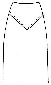

1936—Home Sewing Course
by Helen Hall
Series 2—Cutting and Assembling
CUTTING THE DRESS
Understand the pattern
To be successful in cutting out the dress, not only the pattern but the material should be understood, as patterns are placed differently on different materials. These two subjects have been fully explained in the lessons on patterns and the lessons on materials.
Check for cutting
As an extra precaution, it is well to review some of the important items to check before the scissors are actually placed into the material. Cultivate the habit of going over these questions each time a garment is ready to cut:
- If the material is folded double, is there a straight edge at the top?
- Is there a nap or a pile in the material?
- Are there any large floral patterns to be arranged ?
- Are there any stripes to match?
- Are all the important sections of the pattern placed?
- Has each section been placed on the correct thread?
- Is there sufficient material?
- Are all necessary seam allowances made?
- Has the hem been allowed?
- Has the pattern been placed economically?
- Has the belt been planned?
- Are all necessary small sections planned?
- If the pattern is asymmetric, are the right and left sides placed correctly?
- Is the pattern pinned exactly on the fold?
- Has any special seam finish been allowed?
- Has extra length or width been allowed?
- Name and identify the sections to determine if all the back, front, and sleeves have been planned.
After repeating these rules and checking the pattern the scissors can be used and not before.
Plan the layout
The beginner is usually too quick with the scissors. She is so eager to make the dress that she cuts the first section of the pattern without regard for the other sections; she opens the pattern and goods and cuts the first piece that comes to hand. This often ends in disaster for if wider seams are allowed or a wider hem is made, the layout will change and she will find that all the pattern may not be cut from her material. Or if the layout is disregarded, some small important section such as the front yoke of the skirt may be omitted, and if the material is a remnant, the dress is ruined. There may have been an abundance of large sections left and had the pattern been shifted before the first piece was cut the dress might have been saved.
Therefore, follow the pattern layout if possible and place all the sections before the first piece is cut and then pin the pattern down.
Press the goods
Cutting can be accomplished to better advantage if the goods is pressed before cutting. If the material is a remnant, all the creases should be pressed out. If it is soiled, it should be cleaned. The heavy crease down the center of the folded goods should be at least partially pressed out as it is difficult to make the goods lie flat when this center fold is not used as a fold when cutting. The exact width is important on the cross-back and a bulge in the material will make the back wider.
Insufficient material
If there is insufficient material to cut the desired pattern, it is advisable to select another pattern that can be cut from less material. Patterns of bisymmetrical design, in which both sides are alike, can usually be cut from less material than those of angular cuts. Dresses with the front or back cut with a center seam or opening will also cut to better advantage. This permits this part of the pattern to utilize part of the material on the selvage edge. When all the sections are cut on a fold, it often requires more material.
Modify the pattern
It may be possible to modify the pattern to utilize the goods at hand. This is often necessary when remodeling. The sleeves could be shortened; a cuff could be added; a strip of material be set across the sleeve as a trimming; an inverted box pleat might be placed down the back of the waist making a seam under the pleat; a yoke effect made across the upper back or across the front would take a smaller section. It might be an advantage to set godets into the skirt. Or it might be possible to add some contrasting material in the waist and sleeves as a trimming. If other material is added to the waist, plan also to have some trimming on the sleeves so as to balance the design.
Haste makes waste
Take time to cut. Plan to be undisturbed. Keep your mind on what is being done, as it is easy to make one wrong cut that might ruin the garment. It is advisable to be alone when cutting, it may be interesting to sew with friends, but a friendly visit will interfere with the cutting operation.
Use a large flat surface (see lessons on patterns). Two or three card tables are excellent if a long table is not available. The soft surface is excellent for pinning the goods to place. Do not cut on the bed, the floor would be preferable if no tables are available, but use papers or a sheet to keep the material clean.
Plenty of pins
Use plenty of pins when cutting. You have purchased a pattern, and the lines of the pattern should be followed. This cannot be done by guess. Pin the pattern along the sewing lines with the pins resting in the line as they will be used later. Lay aside the sections as they are cut but do not remove the pattern.
Practice each problem as given.
Cutting
Crooked cutting causes misfits
It is difficult for the home sewer to cut edges sufficiently straight and true to the pattern to be able to machine-stitch the seam without marking the sewing line. This is especially important when working with a perfect fitting pattern as a half-inch variation on seams may produce a misfit in the garment.
Home sewers have difficulty cutting straight
The factory cutter has the advantage over the home cutter in that he has a long cutting table, several thicknesses of material that aid in retaining the flatness of the material, heavy flat patterns that do not require perfect pinning on all edges, and an electric cutting machine that glides over the material without shifting the goods. The home sewer is cutting no more than two thicknesses of fabric, and she may be obliged to cut on a small surface with scissors that are not as sharp as they might be. Under these circumstances it is indeed difficult for her to cut a true line for stitching. But the sewing lines of all the dress can be marked in a few minutes, and, although everyone should try to develop skill in cutting a clean, true edge, it is even more important to sew on the given sewing line than it is to cut a perfectly straight line to use as a guide for stitching.
Cut to end of blades
There is an art in cutting straight lines and curves with the shears. Practice with goods as it lies flat on the table; striped material or paper napkins can be used. Open the blades of the shears wide, set them on the goods high into the shears and then close them to the ends of the blades. Repeat the operation until the full line is cut. The long stroke prevents the heckled edges produced by short strokes.
Cutting curves
Curves are cut in the same manner except that the scissors are gradually turned with the curve, but the curve is cut in one stroke, starting at the open end of the shears and continuing to the ends of the blades, turning the shears while cutting. Mark circles on the paper napkin and cut the curves. This method will eliminate heckled edges.
 Clip corners
Clip corners
All inner corners should be clipped in when the dress is being cut out. Clip in the corner while the pattern rests on the material. The clip will be made to within an eighth of an inch of the sewing line so that the seam may be turned back later when the sewing line is marked. Failure to clip points often results in curved corners.
Sharpening Scissors
Sharpen scissors at home
Sharp scissors are necessary for sewing and can easily be kept sharp. Keep a small whetstone in the sewing box and when the scissors become dull, sharpen them at home.
Sharpen bevel edge
Rest the open scissors on the table or machine, holding them in the left hand. As the blades are open you will notice the edge of the blade. It has a flat bevel edge—not a sharp edge like a knife. It is this narrow, flat edge that is to be sharpened and not THE FLAT SIDES OF THE BLADES. Many scissors are ruined when the flat sides of the blades are sharpened.
With the blades open, sharpen the bevel edge across the top of the lower blade that is resting on the table, rubbing the whetstone over the narrow edge from the outer sides of the scissors to the inner side, which will be rubbing from the right to the left. Make several strokes with the stone until the full length of the blade has been sharpened. Then reverse the handles and sharpen the other blade.
Try the scissors or shears and if there still remains one dull spot, repeat the operation on this place. You will be pleasingly surprised at the results.
Scissors oil on fingers
Did you know that you carry your scissors oil with you? If your scissors squeak or bind, rub each blade with the fingers. There is sufficient natural oil on the hands to oil the scissors and they will then run smooth without having oil dripping on the material. If they are rusty between the blades, it may be necessary to drop one drop of sewing machine oil where the blades are joined.
Blunt machine needles sharpened
Blunt sewing-machine needles can also be sharpened with the whetstone. The curled point that is usually caused by pulling the material backward on the machine too rapidly, can be sharpened off with a few strokes on the stone. The needle can then be used for the heavier sewing or for practice work.
Ripping
Rip if necessary
One of the first lessons in sewing is to learn to acquire the patience to "rip". A good seamstress must have the determination to produce perfect results even if she must rip. She is not satisfied to leave something unfinished or to permit a mistake to be left in the garment. She has pride in her work to produce the best results which may require some ripping.
The better the sewing problems are understood the less ripping will be necessary for it is usually inexperience in handling a different material that may produce poor results. Therefore carefully follow all the construction problems and mistakes will not be made.
Ripping by pulling threads
The most perfect method of ripping is by pulling out the threads. A chain stitch will be pulled from the loop end of the stitch and the lock stitch will be drawn out from the bobbin thread if it is loose. If the stitch is tight, first one thread and then the other will be drawn out. This method requires more time but will not draw the goods out of shape.
Chain stitch opened from loop end
Many dressmakers prefer the chain stitch machine because it is easy to rip but it also has its disadvantages. It is often difficult to find which end of the seam to rip. Many sugar sacks are sewed with chain stitch also and test the patience of the housewife when trying to open them without cutting the cloth.
A chain stitch makes a series of knots after it leaves the material. Therefore it should be cut off close to the end of the seam. Examine the stitch and determine which end is the loop-end of the stitch (see illustration). The ripping will start from the loop end. Pick out the thread from the loop and the thread will then pull out.
Razor blade for ripping
The razor blade is indispensable for ripping. Use the blades with the ridge on one edge and the finger will not be cut. Pin one end of the seam to the basting board which is either held in the lap or rests flat on the table, and draw on the other edge of the seam until the machine stitch is visible. Touch this thread with the razor blade and it will separate. Draw down again and touch the thread, gradually repeating the operation until the full length of the seam is ripped. Touch the thread only and not the goods.
Ripping by pulling the goods
If the garment is old and the threads are worn, the seam can be opened by pulling but be sure to rip against the threads of the goods. That is, if it is a skirt seam, rip from the bottom upward rather than from the top downward as the crosswise threads tear more readily than the lengthwise.
Scissors ripping
When ripping with scissors, grasp them in the hand near the points. Open them a very small space and "clip" the thread. Do not lay scissors in the lap when sewing as they are liable to be drawn closed when they are picked up and may cut the dress.
Practice each problem as given.
Questions—Cutting the Dress
- Should the pattern be understood before cutting?
- Should a straight edge be used?
- What should be done if material has a nap or pile?
- What is done with large floral patterns ?
- What is done for matching stripes?
- Should all sections of the pattern be checked for placement?
- Why is it important to cut on the correct thread of material?
- What is done for extra seam allowances?
- Why is it necessary to plan for the belt?
- Why is it necessary to check right and left sections?
- Why is it necessary to make a perfect fold on the straight thread?
- Should extra length be allowed if necessary?
- What is one of the beginners' first mistakes?
- Why does haphazard cutting often ruin the garment?
- Should the goods be pressed? Why?
- What should be done if there is insufficient material?
- What are some of the types of dresses that cut economically?
- Is it advisable to cut quickly?
- What kind of a surface is used for cutting?
- Why should plenty of pins be used?
- Should the pattern be removed from the goods immediately after cutting?
- Is it difficult to cut straight? Why?
- Why can a factory cutter cut straight?
- How are the scissors handled in cutting?
- How are curves cut perfectly?
- When are inner points clipped?
- How far are they clipped?
- Can scissors be sharpened at home ? With what?
- How are scissors held?
- What part of the blade is sharpened?
- How are scissors sharpened?
- What is used for scissors oil?
- How are blunt machine needles sharpened?
- Must one have the patience to rip?
- What are the five methods of ripping?
- How is the razor blade used for ripping?
- How is a chain stitch pulled open?
- How is an old seam pulled open?
- How are the scissors held when ripping?
- What is the most perfect method of ripping?
- What is necessary for easy ripping?
MARKING SEWING LINES
Press mark seams
Stitching a straight seam without a line to follow not only requires perfect cutting but also an accurate eye for gauging the correct distance between the cut edge and the needle. As very few people have a true eye for measure, it is advisable not to depend on the eye for true stitching but to actually crease mark a true line for basting and stitching. After the material has been cut the sewing line is then pressed, marking all the dress very quickly. This may seem to be a waste of time, but the time saved in ripping is not only a saving of time later but is also a saving on the nerves. This is especially true on all intricate joinings such as curves and angles and all fitting lines on the sides of the garment. The time spent in crease marking the seams is repaid in the perfect results when basting.
Crease marking
There are several methods advocated for marking seams but they are too impractical to use and for this reason they are seldom used by the dressmaker. But there is a quicker method used by French dressmakers which will simplify the whole process of making the garment; namely, creasing the seams at the sewing line with a hot iron.
Practically all materials other than velvets and heavy woolens can be marked in this manner. Cottons, silks, synthetic fabrics, light woolens and linens can all be creased and will retain the crease until the seam is basted. Not only are the seams marked with a crease but a crease will perfect the lines of darts, tucks, pleats and corners so perfectly that sewing is made easy.
 Preparation
Preparation
Preparation for the creasing should be made when the pattern is pinned to the goods. If the pattern is to be cut double, then both the right and left sides will be creased in one operation. The pattern should be pinned to the goods along the sewing line so that the pins rest along the line of the seam and in it when creased. This requires careful pinning which is also necessary when sewing perfectly by a pattern. The pattern has been made for a given size and all the seams have been added. For the dress to fit as it was intended for the standard figure, the seam must be made at a given space from the edge of the pattern; each pattern having its respective seam allowance. When the given sewing line is followed accurately, a wider seam allowance may be cut to permit a let-out or to give more material for seam finish in fraying materials. The let-out is most essential for perfect fitting but whether the goods is let out retaken in, any alteration should be made from the actual sewing line and the crease will give it perfectly.
Press the seam
Lay aside the sections as they are cut until all the dress is cut out. Do not remove the pattern from the material. Place the pattern with the material pinned to it on the press board with the pattern side down. Fold back the edge of the pattern until the right amount of seam is allowed and press the turned edge with an iron that is not too hot. This will make a straight true line for basting on both right and left sides.
Marking darts
All tucks and darts should be marked when marking the seams. Place a pin along the line of the tuck or dart with the pins resting in the sewing line. Pick up the goods with the pattern pinned to it and press the line of the dart or tuck. Press one side of the dart and then the other side making two lines that intersect. Tucks will be creased in the same manner.
End of tucks marked
Place a row of pins close together down each tuck indicated on the pattern and through both thicknesses of material as folded. Lift each tuck by the pins and fold over with the pins protruding and press the line of the tuck. After all the tucks are marked with a straight crease, fold down the goods across the end of the row of tucks and press mark a cross-crease as a line for ending.
Pleated crease
Pleated sections should be pinned to the pattern singly. First one side to be marked and then the other side, right and left sides not marked together as the double creasing makes one side with a reverse crease which is confusing when laying pleats, as each pleat on one side of the dress would have to be turned on the crease.
Reversing creases of pleats (Make a paper sample of this problem.)
One of the advantages of creasing is that both the right and left sides are marked simultaneously. But—when both are marked, one side will have the edges of the crease folded the wrong way and will have to be reversed when sewing. The sewing line has been marked, however, and gives a true line for basting.
Pleats
All dart and tuck lines are easily reversed but pleats should lie flat when marked and it is advisable to pin the pattern to the goods with the pattern on the right side of the material pinning down the line of the pleats. If perforations are used on the pattern it is advisable to first crease mark the line for folding and follow the creased line for the pinning. Fold over the pleat as indicated by the pattern and press it just as it will lie when made into the dress.
Hem line marked
A trial hem can also be creased when the dress is being marked, pressing up all skirt sections on the hem allowance. A trial fitting is always more satisfactory when the hem is basted so as to better determine the correct length.
Corners clipped
All inner corners should be clipped, when the dress is cut (as directed). It will then be possible to press back the sewing lines of the edges of the angle when is quite necessary when basting perfect points. The clip should be made to within two or three threads of the actual sewing line so as to make a perfect point. Press mark all sewing lines of intricate points and angles.
Mark all fitting lines
It is important to press mark all side seams of the dress as these seams will be the fitting lines, the side seams of the waist and skirt and also the sleeves.
Unnecessary to mark curves
It is not necessary to press mark curves of the neck, armhole or sleeve cap. It is advisable, however, to press mark the back section at the cross back on the straight section of the back. The curve under the arm need not be marked. Cut narrow seams on all curves, especially inner curves as a wide seam makes the curve smaller.
With the seams all creased it is a simple matter to match the creases and either pin the sections together on the crease and stitch, or baste the seams and then stitch. Assembling the dress will be explained later.
 Tailor's tacks for
inner marks
Tailor's tacks for
inner marks
Tailor's tacks are used only for marking inner lines and curves such as in the placement of a pocket, but they are seldom used by the dressmaker for marking seams.
If the pattern had printed lines, holes must be clipped into the line of the pocket for the tack. Use a double strand of thread. Take two stitches through the perforation leaving the second stitch with a loop above the stitch. Skip to the next perforation and take two more stitches leaving a loop above the stitch, repeat if necessary.
Separate
It will then be necessary to clip the long threads that join the two stitches between the perforations. The pattern cannot be removed unless they are clipped apart and the stitches will be pulled out after the goods is separated if this long thread remains.
After the long stitch is severed, FOLD THE GOODS BACK CAREFULLY PARALLEL WITH AT LEAST TWO OF THE STITCHES, opening the material until both stitches are visible. Draw them apart only sufficiently wide to clip them apart. The shorter the stitches the better they will remain in the goods. After all the stitches are clipped apart, trim off the long threads on top of the goods. If the stitches are separated one at a time, they will usually be pulled out of the goods; opening two or more at a time helps to hold them firm until they are separated.
Tailor's chalk
Tailor's chalk is indispensable in the sewing room if accuracy is desired. It is used for marking straight lines, bias strips, hems, alterations and various other uses.
When using tailor's chalk to mark a straight line, follow the edge of a yardstick or long ruler. Soft materials usually must be marked in dash lines to keep from displacing the material. Bias binding material should also be marked true with chalk marking dash lines.
Blocking material
Tailor's chalk is also used when blocking out an original pattern or when cutting from a pattern with no seams allowed. If no seams are allowed on the pattern, it is always advisable to make a dash line for cutting as a warning not to cut off the seam allowance. This seam allowance can then be pressed back over the edge of the pattern which gives the actual sewing line.
Tracing wheel
A tracing wheel is seldom used on materials but it is invaluable when tracing off patterns for a duplication of it, or when tracing dress lines to match for making some section for remodeling a garment.
Important! Mark for stitching
It is even more necessary to crease mark for stitching than it is for basting as it is sometimes necessary to alter the basted lines. But after the desired fitting is secured and the basting has been made, place the dress on the press board wrong side out and press all the seams over to one side to make a straight crease for stitching. THE SEAM IS NOT OPENED.
This crease will eliminate any crooks in the basting which are easy to make by the most particular worker as some material slips and slides easily which makes it difficult to handle. Points and angles should always be crease marked before stitching, also all side seams and long seams of skirts.
After the crease has been made, LIFT THE CREASED SEAM AND FOLLOW THE CREASE WHEN MACHINE STITCHING AND THE LINE OF THE SEAM WILL BE PERFECT.
Stitching without basting
It is possible to stitch without basting if one is experienced in sewing, but it usually results in much ripping for the amateur.
The factory operator never bastes but she sews thousands of the same seams and soon becomes an expert in her work. If the home sewer is working with gingham or some firmly woven material it MAY be safe to stitch without basting but silks and soft materials should always be basted.
Practice each problem as given.
Questions—Marking Sewing Lines
- Why is it difficult to stitch a straight seam?
- Why is it necessary to mark sewing lines?
- Which lines are necessary to mark?
- What is a quick method of marking?
- What materials can be marked in this manner?
- What materials cannot be marked in this manner?
- What other parts of the dress are crease marked?
- When are the pins placed for crease marking?
- If the material is to be cut double what happens?
- When is a wider seam to be allowed?
- Should the pattern be immediately removed from the goods after cutting ?
- How are the pattern and material placed on the press board?
- How is the seam pressed back?
- Is the seam pressed on both the right and left sides of the goods?
- When are darts and tucks marked?
- When are the pins placed? How are the lines creased?
- How is a perfect ending for a row of tucks made?
- Are both sides creased simultaneously?
- Does one side require reversing the crease where doubled?
- Can a straight line then be followed?
- Should pleats be marked on double fold of material?
- How is the pattern pinned to the goods?
- What must be done to perforated lines?
- How is pattern pinned and pleats marked?
- Should a trial hem be creased?
- What should be done to inner corners?
- Should corner sewing lines be marked? Why?
- How far in is the corner clipped on inner corners?
- Why is it necessary to mark all side seams?
- What seams are unnecessary to mark?
- What cross-back seams should be marked?
- Should wide seams be cut on curves and why?
- When are tailor's tacks made?
- Must holes be made in printed patterns to be able to make tailor's tacks with a loop?
- How many stitches are taken for each tack?
- Are the long threads separated on top before the seam is separated?
- How is the goods opened to separate the tacks?
- Is the seam opened narrow or wide?
- Do short threads hold better than long threads?
- What should be done to the long threads on top?
- Do dressmakers' tacks follow a chalk line?
- When are they used?
- When is tailor's chalk used? How?
- How is a bias marked with chalk?
- If no seams are allowed what indication should be made?
- When is a tracing wheel used?
- How is a basted seam straightened for stitching?
- How is the seam placed on the press board?
- Is the seam pressed open or over to one side?
- What should be done to points and angles and side seams?
- Should the amateur stitch without basting?
- Why can factory operators stitch without basting?
MAKING DARTS AND TUCKS
Darts defined
Darts are made with two given lines that converge at a given point. These lines when joined, will lift the seam the width of the space between the lines and produce a curved surface to fit the curves of the body. Darts slant toward the curve wherever placed.
It is not always a large bust that produces a dart but also an erect posture. The shoulders will then recede and will produce a sloping line from the shoulders to the waist. The body is thicker through the center than at the shoulder line.
Darts on waist
Darts are usually found on the front of the waist either at the shoulder seam or the underarm seam. Princess lines also require more darts as there will be more curves of the body to fit.
Darts on skirts and sleeves
Darts are also placed at the back of skirts to fit the curve of the body below the waist line. Sleeves that are cut in one with the shoulder may also have darts. Darts are also used in the designs of full sleeves.
Wherever darts are made they should be made carefully; poorly made darts are very evident. It is important that dart lines be followed carefully. If the pattern calls for a straight dart, the lines must be stitched perfectly straight. If the dart is curved, the curve must be followed exactly. To make straight dart lines mark the lines of the dart with a continuous line and not a few tailor's tacks, as they are not sufficient for a perfectly straight line for basting. Mark with a ruler if necessary, using tailor's chalk.
Basting
When basting a dart, pin it the full length and then baste from the point outward, but when stitching it stitch from the seam inward. The dart should not twist when basted. There should be no fullness to ease into the edges of darts.
Crease marks
It is advisable to straighten the sewing line of the dart after it is basted and before it is stitched. Draw a chalk line on heavy material, using a ruler. Thin material can be creased marked by dropping the bulk of the material over the end of the press-board so that the curve below the dart is at the end of the board. Press the dart to one side to straighten the line.
Under-arm darts
Under-arm darts are shorter than shoulder-darts and are used on many dresses that have no other method of fitting the curves of the front. When darts are not desired, gathers at the waist line can be used but they are not always required. It is possible to stretch some material and eliminate darts, but it is not always possible and seldom advisable.
Shoulder dart
The shoulder dart is much longer than the under-arm dart. The front edge is on a straighter thread of material than the back edge. Be sure to mark the sewing lines with a crease or chalk before basting; match the lines and pin before basting. Pin and baste with the material flat on the table. After stitching, tie the end threads to prevent the thread from working through and loosening the stitch.
Point
Darts on heavy material should be trimmed off and pressed open, cutting off the dart to a half-inch seam and then splitting the end to within an eighth of an inch of the point. If moisture can be used, press as directed in rules for pressing.
Place the point of the dart over the end of the press board so that it will lie flat. Press over the point and any fullness will disappear if it is stitched correctly.
Skirt darts
Skirt darts on light weight material are not cut open but are pressed toward the center on the wrong side so as to form a panel effect on the back. Heavy material is always split and pressed open. Under-arm darts are usually pressed downward and are not split.
Tucks
Many dresses are made with tucks at the back of the neck or at the shoulder in front. These tucks should be crease-marked as directed in marking sewing lines so that it will not be necessary to waste time in measuring. Small tucks are usually made on the wrong side of the goods and are called "Inverted" tucks. Tucks differ from darts in that they are made the same width the full length of the tuck or nearly so while a dart is stitched to a point. Pin tucks are made very narrow and are used as a trimming.
Stitching tacking
Stitch the tuck from the seam end to the dress end of the tuck so that the end threads will be loose and perfect for tying. If the material is of firm weave it can be held firm at the end when stitching. When the end of the tuck is reached, hold the goods and prevent it from feeding under the needle so that two or more machine stitches will be made at the end of the tuck. The threads can then be trimmed off without tying.
After the darts and tucks are basted, the dress is ready to be assembled unless there are bound buttonholes to make. These should be made on the sections before they are basted together. Instructions for bound buttonholes will be given in Series 3.
Practice each problem as given.
Questions—Making Darts and Tucks
- What are darts?
- When are they used?
- Where are they used?
- Which way do they slant?
- Is it always a large bust that requires a large dart?
- Are the side lines of darts straight or curved?
- What happens when the lines are curved?
- What must be followed to stitch a straight dart?
- Which way is a dart pinned together?
- Which way is it basted? How is it stitched?
- Is fullness eased into the sides of the darts?
- Should darts lie flat when folded?
- Should tucks be crease-marked?
- Are tucks in the back of the neck made on the right side?
- What is the difference between a tuck and a dart?
- What are pin tucks?
- From which end are they stitched?
- Are the ends tied?
- How is the tuck held without tying?
PRACTICAL STITCHES
Threading
As sewing is based on needlework, the first lesson should be in threading and handling the needle. Thread dark thread into the needle against a light background and light thread against a dark background. If there is difficulty in seeing the eye of the needle, use crewel needles with long eyes. Baste with fine, soft thread. There is now a small cone of thread offered which is much better to use for basting than the stiff basting thread. Do not use a long thread, no longer than can be pulled off the spool with one reach. If the dress is basted in white thread, any alterations should be basted in colored thread so as to designate the correct mark for alteration.
Thread knotting
Thread often knots when it is sewed by hand. This is caused by the knot being placed on the wrong end of the thread. The thread in the needle turns as each stitch is taken and if it retwists rather than twisting tighter it will cause the thread to form a tangle of tiny knots similar to the knots in a piece of twine retwisted in the fingers. If the thread knots, tack it, break it off and draw down the short end of the thread for a new knot and proceed to sew.
Knot the end of the thread by circling the thread around the finger once only, and drawing down the thread into a knot. Bastings should be tacked only when there is a strain on the seam that is basted. Otherwise overlap the bastings and do not tack them. Closely tacked bastings are difficult to remove after the machine stitching is made on top of them, and the heavy tacking increases this difficulty.
Thimble
The thimble is placed on the middle finger of the right hand if the seamstress is right handed. It is used as a "pusher" for the needle and protects the end of the finger. Either the side or the end of the thimble can be used.
Holding the goods
Many of the secrets of sewing are found in the correct method of holding the material. In all hand seaming and gathering, the goods rests between the fingers. Place the needle in the goods at the beginning of the seam, then lift the seam into the fingers and hold the thumb in front of the seam and the first finger back of the seam and proceed to make the running stitch holding the needle steady, working the goods back and forth with the left hand in front of the needle point as the thimble pushes the needle forward. As one becomes accustomed to the position of the needle and thimble, the goods can be worked back and forth more rapidly and thus make the stitches smaller and faster. The right hand is held still and the left hand moves the goods.
Necessary stitches
It is necessary to learn but a few stitches to make a dress—plain running stitch, gathers, back stitch, plain basting and dressmaker's basting, machine stitching, and hemming.
Running stitch
Small, even stitches are called running stitches. Use a medium-to-small needle to secure the best results. Number seven is a good average size. Be sure to hold the goods, needle and thimble as directed in the previous paragraph.
Gathers
Gathers are made with a line of running stitches drawn up on the thread. The process is called gathering. The needle should not be removed from the goods the full length of the length to be gathered. As the needle is filled with the goods, it is pushed off the head of the needle and refilled, continuing to the end of the length to be gathered. This produces an unbroken line when finished.
Shirring
Shirring is made with several rows of gathers placed close together. If several rows are to be hand-shirred, make the desired number of rows of running stitches but do not draw them up or tack any of the rows until they are all made. Then draw up all the rows in one operation and tack each thread separately. The width must be measured before tacking.
Back stitch: tacking
A back stitch is used to prevent a stitch from slipping or drawing. It is a plain stitch taken back over the last stitch making a thread both above and below the stitch. When several back stitches are taken in one place it is called tacking.
Flat basting
All long seams should be basted with the goods resting flat on the table. The goods is not picked up in the hands, but each stitch is picked through to the table or basting board. This may seem awkward at first, but it is the best way to baste straight. The more bias section of the seam should be uppermost just as gathers are placed uppermost. When extremely bias sections are to be basted, it is advisable to first machine stitch the raw edge of the bias section before it is placed on the matching section to be basted. Test it after it is stitched to see that it lies flat.
Plain basting
Plain basting is made with an even stitch. It differs from the running stitch in that it is a larger stitch and the stitches are farther apart. This basting is made in the hands.
Dressmaker's basting
Dressmakers use a quick basting that holds the seam firmly in place with few stitches. Place the edges to be basted flat on the table with the more bias edge uppermost. Pin to position, chalk mark a straight line with the ruler if the seam is a long straight line. With a knotted double thread take two short stitches close together picking through to the table (do not pick the seam up in the hands), skip an inch-and-a-half space and take two more small stitches and continue to skip the space and make two small stitches. Do not tack the ends. The two small stitches hold the seam and prevent it from slipping and the long space speeds the work. This stitch holds much better than long loose bastings and gives a pleasing appearance.
Necessary seam finishes
The day of artistic needlework on the inside of a dress is past. Dresses are not worn for years as in the days of our grandmothers when the inside finish on a dress was a work of art; finished with yards of ribbon and embroidery stitching across the feather boning. The dress might well have been worn wrong side out. The inside finishes of today are for necessity more than for beauty and to keep the material from fraying. They are finished quickly if finished at all. More time should be spent on the problems of the outside of the dress rather than the finish of the seams. After all, the dress is to be worn right side out and is not examined on the inside. The inside should look neat and of a uniform appearance; the seams should be even and smooth but not necessarily finished with fancy stitches.
Pinking
Pinking is the approved method of seam finish if the material is not of the fraying variety. All closely woven materials may be pinked with the handy pinking shears that are available today. The pinking can be done as the dress is cut out for the pinking shears are the cutting shears. If the goods is of firm weave and pinking shears are not available, then the seams can either remain unfinished or can be pinked by hand with the scissors, folding the seam double for clipping the point. The seam is pinked double and pressed open later.
Overcasting
If the material frays, it should be trimmed off and overcast. If the seam is to be pressed open, each side of the seam is overcast separately. Be sure to trim off the loose threads, knot the thread and wind the needle around the edge of the seam as the thimble pushes the needle forward. As the thread is used up, do not tack it, but overlap a few stitches with the new thread, and continue. This prevents a drawing on the finish. As the seams will all be pressed open, even the armhole, be sure to clip all inner curves such as the waistline on the side seams and the armhole, so that the overcasting will not be cut when clipped later. After the seam is pressed, open for overcasting. It makes a neat finish and is quickly accomplished.
Dressmaker's tacks
Tailor's tacks are used for tailoring, as they are more difficult to make and require more time. The dressmaker uses a shorter method that simplifies the process, called dressmaker's tacks. The sewing line should be chalk marked. The seams should be laid flat on the table or a long basting board. Pin to position every six inches. Use a double thread without knotting. Pick up one short stitch through both edges, then skip a space of an inch and a half or two inches and pick up another short stitch. The shorter the threads are clipped the closer the material holds. Notice that the stitch is not looped as in the tailor's tack. The full length of the seam can be marked very quickly. After the full length is marked, clip apart the long stitch on top of the goods, the threads that joined the two short stitches; clip all threads along the full length of the seam. The seam is now ready to be separated, open the seam lengthwise, parallel to the cut edge, never from the top downward. Fold back the edge until three stitches are visible. Hold the under piece down with the points of the scissors and clip the double threads apart. Continue to open the seam carefully parallel with the edge until all the threads are opened. Then before the goods is raised from the table, trim off the top threads as close as possible, for the shorter the threads that protrude, the better they will remain in the goods.
Slip-stitched hem
As there is one hem that is used on practically all garments, this will be taught first. The tailor's slip stitch is somewhat different but will be learned in another lesson. The hem is basted. The thread is caught to the dress or under section and in the same operation, the needle is slid into the fold of the hem before it is drawn out. Draw out the thread and catch two threads of the under section; on the same needle slide the needle into the hem and repeat to the end of the thread.
Machine hems
Wide hems are made by hand, but narrow hems may be made by machine with the sewing machine attachments which may be used after much practice. Straight edges are simple to run by machine, but curves are more difficult if not impractical. Curved edges should be turned and basted before stitching. Machine stitch all hems close to the edge.
Occasional Stitches
The stitches explained in the previous lesson are the stitches generally used and should be learned first, as the following stitches are seldom used and then on special materials or underwear.
French seams
French seams are not often used in making dresses. They are especially adapted for use with thin materials and on garments that have straight lines and do not fit closely, such as infants' wear, nightgowns, etc. When French seams are much curved it is very difficult to allow sufficient fullness in the first stitching to permit the seam to be turned and stitched again without drawing. However, it is not difficult for the home sewer to achieve skill in handling this seam where conditions make it desirable if the seams are carefully basted. To make it, stitch a narrow seam on the right side of the garment. Clip off all loose threads. Turn the garment and stitch another seam on the wrong side, encasing the raw edges in the seam. In many cases the French seam can be replaced by the non-rip seam, which can be made in one stitching on the wrong side.
Non-rip seam
This seam can be made on all underwear or any material where a finished seam is desired.
Baste one edge of the seam back on the other edge, one-half of the seam allowance. For example, if a three-eighths inch seam is allowed, baste the shorter side at three-sixteenths of an inch, with the wider edge extending twice this width beyond.
Turn over the wide side until its raw edge just meets the edge of the narrow side. Then bring the fold of the wide side to the basting line and stitch flat through the three thicknesses of material, finishing the seam with one stitching. After one becomes experienced, this seam can be held in place with a few pins and the edge turned over as the seam is stitched. This finish is made quickly and is very satisfactory for non-fitting garments.
Sheer fabrics
This same finish can be used on sheer dresses after the dress has been stitched and finished. One side of the seam is trimmed back and the wider side is then rolled over the narrow side and either slip stitched or held with a running stitch.
 Cross stitch
Cross stitch
A cross stitch is sometimes used. Start at the left with a straight stitch. Take one stitch above the seam and the next stitch below the seam, gradually working to the right. This will overlap the stitches and hold the edge in place. This stitch is sometimes used on parts of the coat lining or on velvet.
There are many other stitches seldom used in making dresses and can be found in all sewing books. As lessons in this course are to explain the dress construction, these superfluous stitches will be omitted.
Practice each stitch if new.
Questions—Practical Stitches
- How is light thread threaded?
- How is dark thread threaded?
- If eyesight is poor, what kind of needles are used?
- Is a long thread used?
- How long should the thread be made?
- What kind of thread is used to baste alterations?
- What causes knotted thread?
- If thread knots, what should be done?
- How tight should bastings be tacked?
- For what is the thimble used?
- What part of the thimble is used?
- How is the needle and goods held for rapid sewing?
- What are the necessary stitches for dressmaking?
- What are running stitches?
- How are gathers made on the needle?
- How is shirring made ?
- What is a back stitch? When is it used?
- How should long seams be basted?
- What part of the seam is uppermost?
- How should bias seams be treated?
- How is plain basting made?
- What is the dressmaker's basting, and when is it used?
- Are the ends of threads tacked on long seams when basting?
- How are the inside seams finished?
- Is much time spent on inside finish of a dress?
- What is the quickest method of inside finish and when used?
- What is used for fraying seams and how is it quickly made?
- How are the dressmaker's tacks made? When are they used?
- Are the top threads clipped apart in dressmaker's tacks before the goods is separated?
- How is the full-length seam opened in dressmaker's tacks?
- What hem is generally used?
- When are machine hems used?
- Should French seams be used in dressmaking?
- When are French seams used ?
- What is quick seam finish?
- How are sheer fabrics finished?
- How is a cross stitch made?
RIGHT-SIDE BASTING
Intricate seams
Exclusive dressmakers and Parisian modistes make their dresses with many intricate seams which adds both smartness and value to the garment. As intricate seams are often difficult for the amateur to make by stitching from the inside unless she is properly instructed, instructions are often given with the pattern for flat stitching the seams, which is easier but is often impractical.
Flat stitching
Flat stitching, or stitching the seam from the right side, often gives a "home made" effect to a dress unless it is of the tailored type. In this type flat stitching is advisable, but the softer line dresses should be stitched from the inside only.
Even though the dress is of the flat-stitched type the seam should also be stitched on the inside before turning the dress to stitch from the right side. If a well-made dress is examined, this will be found to be true, therefore, it is necessary to learn to stitch intricate seams from the inside to be able to make them as they should be made with double stitching.
Stitch close to the seam
If flat stitching is to be used, it should be made very close to the seam, stitching through three thicknesses of material, as the seam is all pressed to one side. It is only the heavy, tailored coats that have the flat stitching placed away from the seam, all dress stitching should be made very close to the seam; the thinner the material the closer to the seam the stitching is placed.
Right-side basting
To be able to make these intricate seams perfectly it is often necessary to baste the seam from the right side to secure the desired effect. This is called right-side basting.
When used
Right-side basting is very helpful when basting curves, angles, applied facings, converging lines, stripes, plaids and alteration lines. It is possible to see the finished effect while the basting progresses, as the seam will lie flat. Much of the beauty of a striped or plaid dress is in the perfect matching of the converging lines and this can be easily accomplished with right-side basting.
Prepare seams
It is necessary to prepare the seams when basting from the right side as the one edge will be applied to the matching flat edge of the seam on the under side. One edge must be folded under, pressed, or basted before it is applied. All inner points must be clipped to permit the seam to be pressed back, and all curves, especially of loosely woven material, should be machine stitched around the raw edge before the seam is turned back. The edge is then basted back and pressed flat before it is applied.
Yokes
If the section to be applied is a yoke, then press back the seam of the yoke as all yokes are applied to the garment rather than the garment being applied to the yoke. This also applies to flat stitching.
Pin to place
Baste flat; pin the prepared section to the matching seam exactly as it should be made in the finished garment. Pin the prepared seam on top of the matching edge of the seam, placing the pins close together so that the material can be picked up in the hands if necessary, after it has been matched and pinned to place.
Slip stitched to place
Baste the seam flat on the table if possible. This can be done if the seam is long, if curved it must be held in the hands. Take one stitch on the under section and draw out the thread, then slide the needle into the fold of the pressed edge and on the same needle that holds this stitch, catch a thread of the under section and draw out the thread only a short space. Repeat for three stitches before the long thread is pulled through. The needle catching both the top and bottom material on one stitch prevents the material from sliding out of position. The long stitch is taken in the fold of the pressed edge and the short stitch taken in the lower edge of the seam. This is slip stitching the pressed edge to the matching section.
Press well
After the seam is basted, press well so that all mistakes will be corrected in the pressing and the material will lie flat. This will make a true line in a crease to follow on the under side. Lift the seam on the wrong side and stitch on the crease. Press after stitching on the wrong side before stitching on the right side later.
Inner angles
If the material is loosely woven, as in coatings, the inner points will fray and should be stayed across the point.
Clip the inner point to within two or three threads of the sewing line and press back the edges. Stretch out the corner to a straight line and across this straight line flat stitch a selvage of the goods, placing the selvage on the right side of the goods and stitch it flat. The seam on the cut edge must be very narrow at the ends and diminish to three threads at the point. When this point is pressed back, the point will not fray. The seam can then be applied to the matching edge.
Corners
When stitching corners, stitch to the point; lower the needle into the goods; raise the presser foot of the machine, and swing the goods around the needle, using it for a pivot. When the new line for stitching is in place, lower the needle bar and continue to stitch. This will stitch a corner to a true point.
Acute angles
If an acute angle is to be joined, it is advisable to apply the wider section of the joining seam. If it is to be flat stitched, the seam can be pressed over to the opposite side later. If it is to be applied as in an applied facing, then the point must be carefully prepared before basting.
Press back the edges of the angle. Turn up the material across the point. Then trim off the surplus seam allowance both at the point and on the sides of the seams at the point. This will finish the point and prevent the threads from protruding beyond the edge of the finished seam. It will than be pinned and basted to place.
Shaped facings
All shaped facings used as a trimming must be basted from the right side to secure the best results, even if they are to be flat stitched later. There should be no puckers in the facing and it should lie flat. The best results can be secured if the raw edge is machine stitched before turning back the edge. Press flat before applying it to the garment.
Practice some intricate seams
Questions—Right-Side Basting
- What type of dress is flat stitched?
- Should flat-stitched seams also be stitched from the inside first?
- How close to the seam is flat stitching made?
- When is wide flat stitching used?
- What is used to secure perfect results when basting intricate seams?
- When is it used?
- How is the end of the seam prepared?
- Is a yoke applied to the garment or the garment to the yoke?
- How is the prepared sections applied?
- How is it basted?
- How is the stitch made? What is done after basting?
- What must be done to the inner corners?
- What line is folded on the wrong side for stitching?
- How is an inner corner stayed?
- What is done to perfect acute angles?
- How are shaped facings applied?
ASSEMBLING THE DRESS
Group the sections
Lay aside the sections of the garment as they are cut, placing all the back sections together and all the front sections together, both waist and skirt. Place all the sleeve sections together and separate all the trimming sections. The patterns should remain on all cut sections until the material is basted.
Special pieces
If a special section of material is to be reserved for some purpose, fold it up and place a pin in it for identification later, otherwise it may be cut up for bindings.
Mark sewing lines
The sewing lines will be marked after all the dress is cut. All inner points will be clipped to within a few threads of the sewing line so that they can be folded back at the sewing line. If the material can be creased with the iron, it is advisable to crease mark all the sewing lines as directed in the lesson on marking. Mark all tucks, darts, pleats, center fronts, and center backs, all folds and all intricate seams such as points. If these lines cannot be creased they should be marked with chalk, tailor's tacks, or dressmaker's tacks. All these lines must be made perfect.
Bound buttonholes
If there are to be bound buttonholes in the dress they should be made before the dress is assembled, unless the garment will require extreme alterations, but as practically all the alteration will be made on the side seams and shoulders, this will affect the center section but little.
Tucks—darts—yokes
Carefully baste all darts, pinning the darts so they will be made to match; baste all tucks; make any sheering or gathers and attach the front section to any possible yoke effect in the front only. If the yoke is curved (see rules for right-side basting to perfect it) match all notches when basting. Baste the front of the waist complete and press all the seams over to one side on the wrong side of the goods and stitch on the crease. This will perfect all the lines for stitching and will give a pleasing effect to the work. It is far more thrilling to sew when each section develops perfectly.
Double front
If the front overlaps by being made in two sections, then the sections should be basted together down the center before the skirt is basted to it. The front is made complete and the back complete and the two are then joined together. If the front has bound buttonholes, these should be made and the facing applied before the two sections are basted down the center.
Assemble the front of the skirt complete with pins, matching all long sections flat on the table. Match any two right and left pieces to the matching seams of another section and pin to place immediately. Then pin the seam even, and baste.
Pleated sections
If there is a pleated section in the front or a center box pleat, this should be made complete while the skirt is still in one section and not joined to the dress. Finish the pleats complete and press flat. If there are any intricate seams such as pointed yokes, or inset pleats, it may be advisable to set them in from the right side. (See rules for right-side basting.)
Bias on top
When basting, place all bias sections on top for basting and the straighter section on the bottom. Smooth the bias section along the straight threads of the goods so the edge will be perfect for basting. Pin to position before basting. When working with sheer fabric cut on the bias, it is sometimes advisable to baste the seam to tissue paper to hold it firm for stitching.
All back sections will be handled in like manner, basting all tucks and darts, making any pleated sections necessary and pressing flat before joining to the waist.
The front of the waist is now basted to the front of the skirt, matching the centers perfectly. The back is then basted, matching the center of the waist to the center of the skirt and pinning from the center to the side seams. This is also done on the front. The waist line is usually not changed; the fitting is done elsewhere. (See rules for fitting.)
Basting
Use the dressmaker's basting on all long seams, as it is quicker and holds the material firmly in place with fewer stitches. Use fine soft thread for basting. The stiff, heavy thread is more difficult to use and it knots easily. Do not use a long needle for basting. If the thread knots, see lesson on stitches.
Prepare seams
All intricate seams such as points and curves should be prepared before basting. (See lesson on points and angles.) If the joining seam is a decided curve, machine stitch the raw edge below the sewing line and toward the raw edge. This stitching will hold the curve in shape but should not be visible when finished.
When the seam is quite unruly when basted from the wrong side, turn it to the right side, fold under the edge, pin to the correct position and baste it from the right side with a slip stitch. (See rules for right-side basting.) This will perfect the most difficult seam.
Flat stitching
If the seam is to be flat stitched, it should first be stitched from the wrong side before stitching from the right side. The first stitching will make the seam more firm and will make a flatter line for the final stitching. The seam must be pressed after the first stitching. This pressing will eliminate any pouching and bulging in the seam and will give a perfect edge to follow for stitching.
Yokes
When the dress is the type to be flat stitched, the yoke is flat stitched to the skirt and to the waist rather than the waist flat stitched to the yoke. The yoke overlaps the other sections. The seam is then pressed under the yoke to form the perfect edge for stitching and the final stitching is made through the three thicknesses of material, both edges of the seam and the yoke. The seam is not pressed open unless the seam is flat stitched on both sides of the seam.
When to flat stitch
All flat stitching should be done before the side seams are joined as it is very difficult to flat stitch perfectly with the whole dress bundled under the arm of the machine. The tension should not be too tight, as the stitch is taken through three thicknesses of material.
Side seams
The front has now been basted complete and the back complete, and they have been joined at the waist line. The side seams are now basted. Lay the dress flat on the table and carefully match all intersecting lines at the side seams. This applies to the waist line and any possible yoke lines extending into the side seam. They must match perfectly on the right side. It may be necessary to turn the seam back on one side when pinning to place to see the sewing line of the matching side. Leave the left side open at the waist line for the placket when stitching but it should be basted shut and press marked on the sewing line.
Sleeves
The sleeves are set in last but should be set into the dress before it is tried on. Baste all the sleeve sections together, matching the sleeve seams when the pattern is removed from the sleeve material. Overlap each sleeve to the opposite side and pin so that they will not be made for the same arm.
Make the darts; baste on any possible insets, and make it as near complete as possible with the basting. The effect is nearer perfect and the fitting will be easier.
Saddle shoulders
Saddle shoulders and all sleeves extending into the neck will be basted into the dress to join the shoulders. The set-in sleeve will be basted after the shoulder seam is joined.
The shoulder seam is always basted with the back of the dress uppermost as the back seam is usually a trifle longer than the front shoulder seam due to the curve of the shoulders. The fuller portion of any material is held uppermost for basting. Pin both ends of the seam at the sewing line and it will be immaterial whether the basting is started from the neck or from the arm. The back must be uppermost with the small part of the seam held on top.
Stay the armhole
If the dress is to be tried on without a sleeve it is advisable to machine stitch around the curve of the arm before it is tried on as the curve will stretch and the sleeve will then not fit.
Collar
It is not necessary to baste on the collar for the first fitting unless so desired. The neck often must be changed in fitting, which will alter the neck curve.
Hem
Baste in the trial hem. The dress will have a much more pleasing appearance. This will require but a few minutes.
Stitching
Be sure to press all seams over to one side to mark for a perfect stitching line before stitching the dress after it is fitted. This is even more important than marking the sewing lines with a crease. This pressing will bring out all mistakes in basting and will give the perfect line for the last stitching. The side seams will curve from the waist to the hips and cannot be pressed flat. They can be gradually drawn over the end of the ironing board while pressing and thus retain the curved line.
Seam stay
If the side seam is very narrow or if there will be a great strain upon it on thin material, it is advisable to stitch a narrow selvage of the goods into the seam as a stay.
Use good thread
Stitch with good thread. The best is none too good. After spending many hours making a garment, it is discouraging to have it burst out in the seam at the first wearing or to find the thread fading. Match the dominant color of the material on figured fabrics, usually the background. Also, select thread a shade darker than the material as the sheen of the thread makes it appear lighter. Grey thread is an excellent substitute color for many colors. Keep both light and dark grey thread in the sewing box for emergency.
Questions—Assembling the Dress
- How are the sections grouped after they are cut?
- Should the pattern remain pinned to the goods?.
- What is done with the scraps? Why?
- What should be done to sections reserved for a purpose?
- Should sewing lines be marked?
- Are the corners clipped in? When?
- When are the darts and tucks made?
- How are they marked?
- How are the center lines marked?
- When are tailored or bound buttonholes made?
- When should they be made later?
- What should be done to two-section fronts or backs?
- How should sections of skirts be joined?
- Why should sections be pinned first?
- Should long seams be basted flat?
- What section is placed on top?
- What kind of a basting is used? Why?
- What kind of thread is used?
- What size needle is used?
- What should be done to all intricate seams?
- What is done to curves before basting?
- If seam is unruly, what should be done?
- How are flat-stitched seams made?
- How is seam prepared for flat stitching ?
- How many thicknesses of material does the stitching hold?
- When is flat stitching done?
- How should tensions be gauged?
- Is dress flat stitched to the yoke?
- How is the front of waist assembled?
- How is the front of skirt assembled?
- Are they basted together?
- How is the back section of the waist basted?
- How is the back section of the skirt basted?
- Are they joined at the waist line?
- When is a set-in sleeve basted in?
- When are pleated sections made?
- When is the side seam joined?
- How does the dress lie when basting?
- Are intersecting lines matched?
- How are they matched?
- When is shoulder seam basted?
- How is it held when basting?
- Why is this necessary?
- From which end is the basting started?
- Should sleeve be basted in before trying on the dress?
- If the sleeves are not basted in, what should be done?
- Is it necessary to baste on the collar?
- Should the hem be basted in?
- How are the seams straightened for stitching?
- What can be done to stay narrow seams?
- Why should good thread be used? What color should be selected?
- What shade of silk should be selected?
- What is a good color substitute?